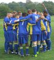
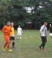
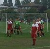
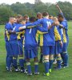
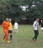
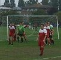

Kingston & District Football League
 

Minutes of Management Committee meeting - 14 April 2015
Meeting opened: 19.00
Present: Mike Hallett (Chair) Lew Block Andy Brown David Christmas Mark Giles Maurice Gilley Malcolm Hall Andy Holmden Darren O'Connell Dave Short Maurice Webb
Apologies for absence: Janet Ford Brian Smith
1. Chairmans's Report. 1.1. Discussion on General Meeting dates. This was also discussed at Committee Meeting on 10/03/15 - but omitted from minutes. It was agreed that General Meetings need not take place in October, December and February. This will be further discussed in May. 1.2. LM United winners of Surrey Lower Junior Cup. Mike Hallett disappointed at lack of other KDFL Committee members at this match. 1.3. No table at Surrey County FA Supper. Mike Hallett feels this league should have a table at this event. 1.4. Maurice Webb detailed teams in remaining KDFL Cup Finals. 1.5. Maurice Gilley asked to liaise with Janet Ford in respect of KDFL Cup Final teams' players. 1.6. Mike Hallett read details from a recent FA Grassroots conference.
2. Fixtures. 2.1. Maurice Webb had issued no fines this month. 2.2. All remaining fixtures are now arranged but said that some clubs may have difficulties in finding pitches. Darren O'Connell and Maurice Gilley suggested pitches that could be booked. 2.3. Discussion on league officers present and provision of match balls at KDFL Cup Finals.
3. Referees. 3.1. Dave Christmas detailed referees on remaining KDFL semi-finals and finals. 3.2. Petersham Pumas FC and Teddington FC have now exceeded the 30 Disciplinary Points limit. Mike Hallett asked Dave Christmas to see a comprehensive disciplinary record
4. Registrations. 4.1. There was a claim in the recent Teck Senior Cup Final there was a Parkside FC not on the team sheet. Following a discussion, it was decided that, due to lack of evidence to support this claim, no further action would be taken. 4.2. Maurice Gilley will be issuing fines in the near future.
5. Trophies. 5.1. Mike Hallett had nothing to report
6. Social. 6.1. Mike Hallett asked about ticket requirements for the Presentation Night.
7. Other Business. 6.1. Mike Hallett reported that the league constitution meeting would be held on 19 May.
Meeting closed: 20.10
Minutes of General Meeting - 14 April 2015
Meeting opened: 20.30
Present: Mike Hallett (Chair) Lew Block Andy Brown David Christmas Mark Giles Maurice Gilley Malcolm Hall Andy Holmden Darren O'Connell Dave Short Maurice Webb Plus representatives from clubs as per roll call.
Apologies for absence: Janet Ford Brian Smith
1. Chairman's Report 1.1. Mike Hallett congratulated LM United Res. on their recent Surrey County cup success. 1.2. Clubs reminded that KDFL application forms for next season had to be returned to Janet Ford by 15 May. 1.3. Mike Hallett asked to see anyone still wanting tickets for Presentation Night.
2. Treasurer's Report 2.1. In Brian Smith's absence, Andy Brown read the following figures: Current Account - £2,172.72 Deposit Account - £10,180.14 Guarantee Fund - £3,084.77 125th Anniversary Fund - £750.77.
3. Fixtures. 3.1. All remaing fixtures sent out to clubs. Details of pitches read out if clubs were having difficulties finding a permit.
4. Referees. 4.1. Dave Christmas thanked clubs for their help with communications this season.
5. Registrations. 5.1. Clubs playing in KDFL cup semi-finals and finals were reminded of league rules in respect of eligibility of players. 5.2. Fines to be issued in next two weeks.
6. Other Business. 6.1. Mike Hallett said it would be nice to see more spectators at KDFL Cup Finals.
Meeting closed: 20.50